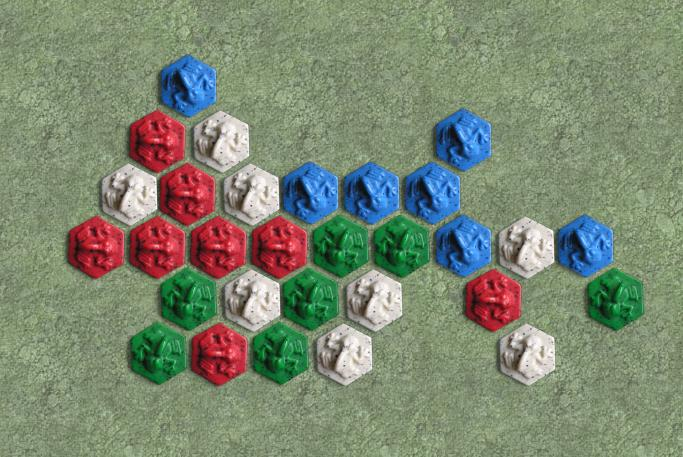

Army of
Frogs
Army of Frogs is a step up the food chain from John Yianni's other
game, Hive. It's a boardless board game played with Hex
tiles, but all the tiles are frogs, and the goal is to simply collect
at least 7 frogs in one cluster.
Army of Frogs is for 2-4 players, but actually plays better with more
than 2 players..
You can read the details in the official
rules, but briefly; on each move you must move one of your
frogs multiple hops (like a hive Grasshopper), then place a new
frog. All frogs must remain connected, as in Hive, but it is
illegal to form strings of 3 or more frogs.
Robots: To
be determined.
|

|